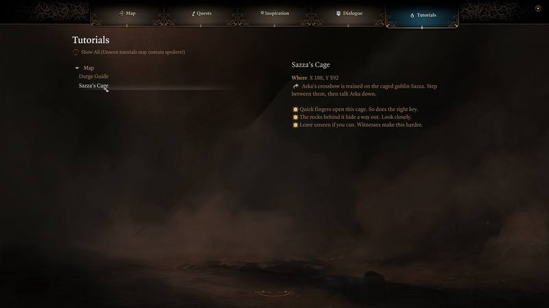
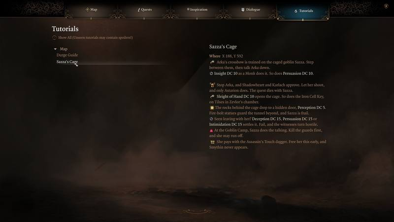

In the game
These are real captures. Anything from later in the story stays hidden until you ask for it. The party in the Act 3 shots is level 2, brought there by a test jump. It shows. A shot marked 'earlier cut' was taken just before the notes' last pass, so its wording is a little off. Select any shot to see it at full size.
Where you stand

Walk near the right spot and the game's own side popup opens at the top left. Within ten seconds, it fades. On a controller, it offers a Dismiss button.
A note says what matters now, in a line or two. If there's more, its footer says so: 'There's more in your journal'. Many notes have nothing more to say, and no footer.
It waits until a fight is over, and until you've moved after loading a save. No more than two hang on screen at once. Pass another in the meantime and it follows a moment later.
Once all of a note's quests are closed, it falls silent.


One-line notices
Small finds get one line in the game's notice bubble. A couple of seconds, and it's gone. The full note waits in your journal. Notices queue behind the game's own banners, so none are lost. Minimal doesn't trouble you with small finds.
Hidden: Act 3 side questShow screenshotHide

Treasure glints

A hidden treasure sparkles once, the first time you come within 12 metres. There is no box. There is nothing to dismiss. Minimal has no glints.
The notes archive
Every note you've reached stays in the journal's Tutorials tab, along with the coordinates from your minimap. At Minimal, it keeps the words you saw on the ground. At Normal, some notes add a few lines that give nothing away. At Extensive, the detail follows, on the notes that earn it.




Quest lines
A mark and a line beneath a quest step. At Minimal and Normal, a deadline never names what's coming. It says only 'Time-limited', 'Before your next rest' or 'Before you leave this act'. At Extensive, it names the event.
Hidden: Act 2 storyShow 2 screenshotsHide


Dialogue tags
A mark at the end of the line, inside the game's own dialogue box. Normal gives you only the mark: a star for a good line, red for one to avoid. Extensive adds what happens the moment you click, and a skull on Dark Urge choices. Minimal leaves your words alone.
Hidden: Act 3 conversationShow 2 screenshotsHide


Item tooltips
Notable items end their tooltip with who they suit. On a controller, selecting the item shows it. Minimal leaves tooltips as it found them.

Map pins
Pins only appear within 160 metres of your party, so the map never floods. Named pins are loot. Pick the item up or open its chest, and the pin is gone. Extensive marks the story's steps as well. Minimal has no pins.


Warnings
Hidden: Act 3 place and questShow screenshotHide

Points of no return
Near one of the 7 exits, each open quest you would lose comes up as a notice, one every few seconds. Minimal and Normal only name quests you've already accepted. What becomes of them, they don't say.
Hidden: Act 2 storyShow screenshotHide

Camp warnings
Go to camp while a long rest would cost you someone, or a quest, and a warning waits for the arrival banner to pass. Then it speaks. Then it speaks again. There are 16 of these. Only Extensive says what would happen.